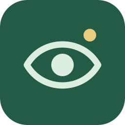

Choose your AI
Connect Gemini or OpenAI with your own API key, or choose an available AI credit plan in the iOS app. Review what you share before enabling checks.

WatchfulWatchful is an AI web monitoring app for prices, releases and other public updates. Tell it what matters. It checks the web and lets you know when a result meets your conditions.
Available on Android, iPhone and iPad. Use your own OpenAI or Gemini API key, with usage billed by your provider. The iOS app also offers optional monthly plans with AI credits.

Official trailer
See how personal watchers help you keep up with the things that matter to you.
Connect Gemini or OpenAI with your own API key, or choose an available AI credit plan in the iOS app. Review what you share before enabling checks.
Start with a preset or your own instructions. Say what to look for and when it is worth interrupting you.
Open saved results and their sources. Use a schedule or supported car automation for future checks.
Background timing depends on your phone. AI can make mistakes; check sources before acting on a result.
€0
Two active watchers. Supported schedules and car triggers. Source links, OpenAI history, and session-only Gemini results.
One-time purchase
The price shown in your App Store or Google Play store applies.
Remove the active-watcher limit when using your own API key. Lifetime Pro is a one-time purchase.
With your own API key, AI usage is billed separately by your provider. Lifetime Pro does not include API credit. The iOS app also offers monthly subscriptions that include Pro and AI credits; see the app for available plans and prices. Purchases restore within the same store ecosystem.
Watchers, OpenAI history, and preferences are stored locally. Gemini results stay in memory only for the current app session. API keys use secure device storage. Each check shares the necessary content with the AI providers used for that check. iOS credit checks use OpenAI web research followed by your selected OpenAI or Gemini model.
Privacy for iOS · Privacy for AndroidPublic information such as product prices, release announcements and local updates. Describe what you want to find and the conditions that should trigger an alert. Results include source links so you can check the information yourself.
You can use an OpenAI or Gemini API key on Android and iOS. Your provider bills that usage separately. On iOS, optional monthly plans also include AI credits. Check the available options in the app before subscribing.
No. Lifetime Pro removes the active-watcher limit for your own API key. Provider usage is separate. The iOS monthly credit plans include Pro and an allowance of AI credits; a credit is a usage allowance, not a guaranteed number of checks.
Background timing depends on your phone’s operating system, power settings and connectivity. For time-sensitive information, run a manual check and verify the source.
OpenAI history is stored on your device. Gemini results are available for the current app session and do not compare previous findings.
Need help setting up a watcher? Visit Watchful support.
Start with two active watchers using your own AI API key. Provider usage is billed separately.